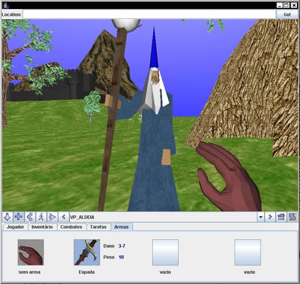
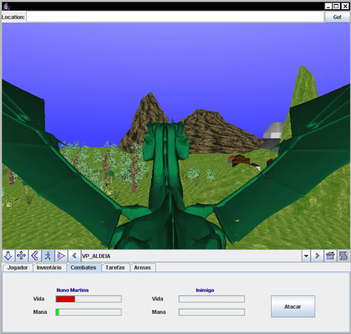
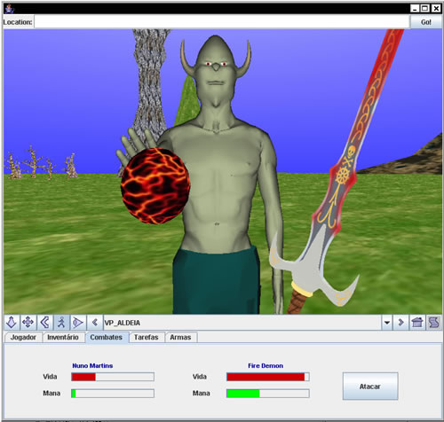
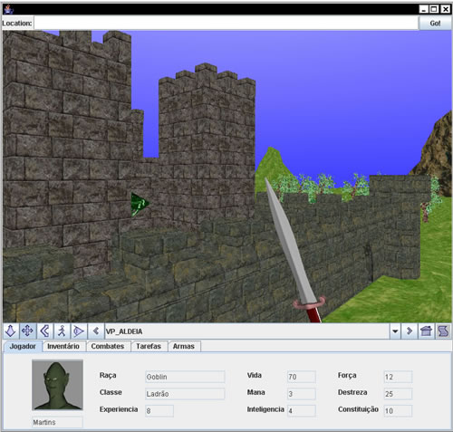

Projecto
Como projecto de fim de curso, foi desenvolvido por mim um protótipo de um jogo estilo RPG de fantasia, utilizando X3D e Java.
O interface deste jogo está dividido em duas partes, a janela 3D onde se pode visualizar a cena tridimensional criada e se desenrola toda a acção do jogo e uma “barra” 2D criada em Java que possui todos os comandos que permitem ao jogador interagir com o mundo virtual.
O jogador poderá, ao início do jogo, escolher uma personagem e modificar algumas das suas características. Depois de iniciado o jogo, o jogador poderá explorar um mundo, realizando algumas tarefas, combatendo alguns inimigos e tentando, assim, atingir os objectivos que vão surgindo.
Nesta secção vão ser explicadas as técnicas utilizadas na implementação da fase de selecção da personagem no jogo, de maneira a ilustrar os exemplos de integração entre X3D e Java abordados nesta página web.
Selecção da raça da personagem
Seleccionar a cor da personagem
Seleccionar uma armadura para a personagem
Modificar o material das armaduras
Visualizar a personagem em diferentes ângulos
Caracteristicas da personagem escolhida
_________________________________________
Selecção da raça da personagem
Foi criado um ficheiro x3d onde estão contidas todas as personagens (personagens.x3d). Estas personagens estão organizadas num Switch pelo que não vai ser possível ver nenhuma personagem até se escolher uma no respectivo botão.
Para além das personagens, neste ficheiro existe também as declarações dos protos (prototipes) das representações das armaduras possíveis para cada personagem (duas armaduras por personagem).
Para seleccionar uma personagem o utilizador deverá clicar no respectivo botão.

Ao clicar num dos botões de selecção da personagem, vai ser escolhido no switch o índice da personagem escolhida, de maneira a torná-la visível. Seguidamente vai explicar-se o código Java referente ao botão de selecção do personagem “humano”:
Devido ao facto de estarmos a usar protos existe a necessidade de haver instanciação dos mesmos para estes se tornarem visíveis. Em primeiro lugar vai ser verificado se já existe alguma instância criada de uma armadura (Figura 74). Isto poderia acontecer se o jogador tivesse seleccionado uma personagem e aplicado uma armadura. Se não se estivesse a fazer esta verificação, ao seleccionar este novo personagem, a armadura do anterior continuaria visível.
if(instancia_armadura!=null){ |
De seguida vai seleccionar-se o índice no switch respectivo da personagem seleccionada, e activar o viewpoint da personagem, como se pode ver a seguir.
// ---------------- seleccionar o humano no switch
|
Devido ao facto de cada personagem ter as suas armaduras específicas e as texturas disponíveis para as armaduras de cada personagem serem diferentes, vai modificar-se os ícones dos botões de selecção das armaduras (dois ícones) e de selecção das texturas de cada armadura (oito ícones). Esta actualização pode ser vista a seguir.
// ---------------- colocar imagens das armaduras deste personagem |
Finalmente são definidas as características iniciais deste tipo de personagem. Estas características vão ser visíveis no menu com o mesmo nome e podem sofrer alterações ao longo do jogo.
//definiço das caracteristicas desta raça |
Depois de clicado o botão, é agora possível ver a personagem ”humano”.

Tal como foi dito anteriormente, existem também neste ficheiro a declaração de dois protos que são a representação das armaduras possíveis para o “humano”. Estes objectos unicamente ficam visíveis depois de criadas instancias destes Protos. Isto vai acontecer unicamente na parte de selecção das armaduras.
Seleccionar a cor da personagem
Como a etapa seguinte é a selecção das cores da personagem, o utilizador deverá clicar na parte do personagem à qual que pretende modificar a cor.

Devido a esta necessidade, estão associados sensores de toque a cada uma das partes do personagem susceptíveis de ser alterada a cor (pele, cabelo, calças).
A partir do momento em que uma parte do corpo é seleccionada o sensor de toque no respectivo gera um evento e consequentemente é accionado o eventListener e chamada a função readableFieldChanged, onde vão estar as acções que ocorrem quando existe uma modificação de um campo x3d associado a esse eventListener. A seguirpode ver-se o código para se verificar quando o cabelo da personagem é clicado.
X3DNode toke_cabelo_Humano = mainScene.getNamedNode("Sensor_toke_cabelo_H"); |
Nesta função (readableFieldChanged) é definido o valor da variável “sensor”, de maneira a identificar qual dos sensores de toque do corpo da personagem foi clicado. Isto vai ser útil para quando é seleccionada a cor, esta ser aplicada á parte do corpo da personagem que foi clicada e não a outra.
sensor=1 à foi clicado o corpo do personagem “humano” |
A partir deste momento tem-se identificada qual a parte da personagem que foi clicada, podendo então passar para a parte de encolha e aplicação da cor. Podemos ver na caixa de texto existente no interface qual a parte do corpo da personagem que está seleccionada para ser modificada a cor.
Depois de seleccionar a cor pretendida o utilizador deve carregar no botão “Aplicar cor” Associado a este botão está um evento que vai aplicar a cor à parte do corpo seleccionada. Em primeiro lugar vai ser capturada a cor do painel JcolorChooser.
Color cor_escolhida = Painel_cores.getColor();
À variável “cor_escolhida” vai ser atribuído o valor RGB da cor escolhida, como por exemplo Java.awt.Color[r=102,g=255,b=102]. Este valor vai ser atribuído ao campo diffusecolor da parte do corpo seleccionada da personagem. Neste momento surge um problema, pois o campo diffuseColor armazena um vector de três números reais, como por exemplo (0.4 , 0.1 , 0.6)
Na variável “cor_escolhida” tem-se um valor do género Java.awt.Color[r=102,g=255,b=102], pelo que tem de fazer-se algumas modificações.
Em primeiro lugar vai separar-se cada uma das componentes RGB em variáveis reparadas, e de seguida dividir cada uma delas por 255 de maneira a obter-se as componentes não no intervalo de 0 a 255, mas sim de 0 a 1 que é o formato predefinido para a cor na especificação do X3D.
Partindo do exemplo em que se tinha: Fazendo: Obtem-se: Neste momento apenas falta guardar estes valores num vector de números reais: |
Dependendo da parte do corpo seleccionada anteriormente, vai agora buscar-se o campo diffuseColor do material pretendido ao ficheiro x3d, e mudar o seu valor para a nova cor calculada.
corpo_humano = mainScene.getNamedNode("A_0_mat"); |
Tal como tinha dito anteriormente, na função readableFieldChanged foi identificada qual a parte do corpo à qual se pretende alterar a cor, e associado um valor à variável “sensor” que vai identificar o material ao qual se pretende alterar a cor. Deste modo a cor é aplicada unicamente ao objecto seleccionado.
if(sensor==1){ // ----------------------- cor CORPO - humano |
Se o utilizador clicar no botão “Aplicar Cor” sem antes ter seleccionado uma parte do corpo da personagem, uma mensagem vai avisar que é necessário realizar essa acção em primeiro lugar.
Seleccionar uma armadura para a personagem
A selecção da armadura da personagem é feita usando os botões presentes nesta secção da aplicação. Existem tês botões, dois para dois tipos diferentes de armaduras e um para retirar a armadura escolhida.

Ao clicar numa das armaduras, esta vai ser atribuída ao personagem e a sua representação aparece no browser. Estas armaduras encontram-se armazenadas no mesmo ficheiro que as personagens. Neste ficheiro existem as declarações dos protos das armaduras.
Como no ficheiro x3d não existem instancias destes Protos, as armaduras não aparecem quando o utilizador selecciona a personagem, mas unicamente quando selecciona a armadura, onde é criada a referida instancia.
Em primeiro lugar é verificado se a variável que guarda a instância da armadura já tem algum valor, para o caso de já ter sido atribuída uma instância de uma armadura anterior. No caso de já existir uma instância anterior, esta é eliminada, pois se isto não fosse feito, ao criar a nova instancia, ficaria uma armadura por cima de outra.
De seguida é criada a instância do proto da armadura pretendida, dependendo de que personagem se encontra seleccionado.
| if(instancia_armadura==null){ // verificar se ja tinha sido adinionada uma armadura ... |
Modificar material das armaduras
Nesta secção o utilizador poderá modificar a textura constituinte do material das armaduras, atribuindo-lhes uma aparência diferente. Existe um pormenor que tem de se destacar nesta parte.
Para se modificar uma textura de um objecto usando SAI, temos de aceder ao ficheiro x3d, encontrar o nome do material ao qual pretendemos modificar a textura, aceder ao campo “url”, e modificar o seu valor de maneira a atribuir uma nova imagem para ser a textura do objecto.
X3DNode mat = mainScene.getNamedNode("MATERIAL"); |
Neste caso especifico isto não se desenvolve propriamente desta maneira. Enquanto que no caso explicado anteriormente, havia um objecto numa cena x3d ao qual se ia modificar o valor do campo “url” do material pretendido, neste caso das armaduras dos personagens, estas não fazem parte do corpo principal do ficheiro x3d, mas são protos.
No caso dos protos, depois de serem criadas as suas instancias, estes passam a ser visíveis juntamente com os restantes objectos que já faziam parte do corpo do ficheiro x3d, no entanto não é possível aceder ou modificar os seus campos se não forem feitas alguma alterações na declaração do proto.
Estas alterações podem ser consulrtadas na secção "acesso externo" deste site. Depois destas alterações feitas aos campos do proto, torna-se possível aceder a estes e modificá-los.
Ao aceder-se ao ficheiro x3d para encontrar o nome do campo a modificar, deve-se fazer o getField à instancia do proto, procurando o nome da variável criada, referente ao campo do objecto que se pretende modificar, neste caso o campo “Tex_humano” que se refere ao campo “url” da textura.
MFString textura; |
Desta maneira é possível modificar as texturas de todas as armaduras dos personagens.
Visualizar as personagens em diferentes ângulos
Nesta secção da aplicação é possível visualizar a personagem de diferentes pontos de vista, clicando no botão respectivo, ou rodar a personagem.

O que vai acontecer nesta parte não é propriamente a rotação da personagem, mas sim a rotação e translação da posição do viewpoint.
Torna-se mais viável a rotação do viewpoint do que a rotação do personagem, existiria a necessidade de rodar o corpo dos personagens e ao mesmo tempo rodar as armaduras, devendo neste caso definir os campos rotation e translation das armaduras como acessíveis dentro dos protos.
Para todas as posições possíveis é realizada a mesma acção. Em primeiro lugar vai aceder-se ao ficheiro x3d do personagem e localizar o objecto Viewpoint e os seus campos translation e rotation que são os campos que pretendemos modificar.
X3DNode View_Point_Grupo; View_Point_Grupo = mainScene.getNamedNode("dad_Grupo_Viewpoint"); |
Seguidamente vai atribuir-se os novos valores para os campos translation e rotation do viewpoint. Estes valores vão ser diferentes dependendo da personagem que se encontra activa e do tipo de vista seleccionado pelo utilizador.
//------------------------------------------rotacao |
Em relação ao scroll que permite a rotação da personagem vai acontecer a mesma coisa, existe uma rotação do viewpoint. Em primeiro lugar vai colocar-se o viwepoint na posição original (translation) e de seguida ler os valores da JScrollBar :
int val=Rodar_viewpoint.getValue();
Depois de se ter os valores na variável “val” vai atribuir-se estes valores ao campo rotation do viewpoint . Desta maneira de cada vez que o valor da JScrollBar mudar vai ser alterado o valor do campo rotation do viewpoint, permitindo visualizar o personagem de todos os ângulos.
//-------------------------------- translacao |
Características da personagem escolhida
Neste menu poderemos ver quais as características iniciais de cada um dos personagens. Cada personagem possui as suas características próprias de acordo com a sua raça. Estas característica podem se desenvolvidas durante o jogo.
Depois de seleccionada a personagem dos valores das suas características terem sido especificadas automaticamente, é possível visualizar essas características seleccionando o menu “características”.
Ao clicar-se neste menu vai desenrolar-se um evento statChanged deste menu, que vai atribuir os valores das características às respectivas caixas de texto, funcionando como uma espécie de refresh.
classe_txt.setText(classe); |
Assim o utilizador pode escolher a personagem baseando-se também nas suas características.
Também neste último menu das características o jogador deverá escolher o seu nome para o personagem e em seguida clicar no botão “iniciar aventura”, para começar o jogo propriamente dito.
Como foi referido, o projecto encontra-se dividido em duas aplicações Java, a primeira que contem todos os processos para a selecção da personagem e a segunda que é o jogo propriamente dito. Ao clicar no botão “iniciar aventura”, vai haver uma passagem da primeira aplicação Java para a segunda aplicação, enviando todos os parâmetros necessários de maneira a manter a personagem seleccionada pelo utilizador, assim como todas as suas características. O método utilizado para passar de uma aplicação para outra pode ver-se a seguir.
//executar a aplicaçao do jogo propriamente dito |
Desta maneira é executada a classe Jogo, colocando-a visível. Basta simplesmente fazer isto na medida que ambas as aplicações se encontram na mesma directoria. De modo a libertar os recursos usados pela primeira aplicação, que agora já não é necessária, procedeu-se ao seu encerramento através do método dispose.
O método utilizado para passar as variáveis das características da personagem escolhida foi o seguinte: Criou-se uma classe Java denominada de “Variáveis.class”, para onde foram enviadas todas as variáveis que são necessárias passar para a aplicação Jogo. Esta passagem de parâmetros vai ser efectuado aquando da selecção da opção “Iniciar aventura".
valores.setX(personagem); |
Para alem das características da personagem seleccionada vai também ser enviado o nome atribuído pelo utilizador, qual a personagem escolhida, qual a imagem da personagem escolhida e a cor de pele escolhida pelo utilizador aquando da personalização da personagem.
Estes valores vão ser recebidos na classe Java “Variáveis.class”. Pode-se ver de seguida o caso da característica “inteligência” da personagem.
private static int var_INT; public static int getINT() { |
Este valor é de seguida enviado para a aplicação “Jogo.class” que vai receber todos os valores das características das personagens e atribui-los às variáveis correspondentes.
… |
Em relação aos valores das características do personagem, vão ser atribuídos às variáveis respectivas de maneira a mais tarde serem utilizados nas lutas e nas várias actividades que exijam um certo nível de capacidades do jogador.
Em relação à cor do corpo, esta vai ser atribuída à “mão” do personagem que se pode ver durante a navegação no mundo virtual.
Para atribuir a cor ao objecto mão vai ler-se a variável cor_mao, que contem um array com os três valores RGB da cor escolhida para o personagem pelo utilizador, ou então a cor original da personagem. Depois disto esta cor vai ser atribuída ao campo diffusecolor do objecto que representa a mão do jogador.
X3DNode mao_personagem = mainScene.getNamedNode("White1_mat"); |
Desta maneira vai ser iniciado o jogo propriamente dito, onde as características do personagem que foram escolhidas na selecção do personagem vão ser adaptadas ao jogador. Algumas delas não vão influenciar o desenrolar da história, como por exemplo o nome do personagem ou a cor da sua pele. Por outro lado existem outras que a vão influenciar, como a sua habilidade para roubar, ou a força física da personagem.
Pode ver-se na figura seguinte o resultado da passagem dos parâmetros da classe “Personagem”, para a classe “Jogo”. Neste caso a personagem escolhida tinha sido o “Goblin”. A cor da mão é a cor seleccionada para este personagem, que foi verde. Pode ver-se também a imagem da personagem seleccionada, assim como todas as suas características. Também o nome seleccionado para a personagem é passado para esta classe.

Nesta parte do projecto surgiu no entanto um pequeno problema, quando se efectuava a passagem da primeira parte do jogo (selecção da personagem) para a segunda parte (jogo) esta segunda parte ficava muito lenta e instável. Isto acontecia devido ao facto de os recursos utilizados para executar o browser e a primeira cena não terem sido libertados, apesar de se fazer o “dispose” da primeira classe ( this.dispose(); ) aquando da passagem para o jogo propriamente dito.
Para tentar solucionar este problema foi feito também o dispose do próprio browser que tinha sido criado para albergar a cena X3D ( x3dBrowser.dispose(); ). No entanto apesar de parecer ter-se alcançado a solução, esta ainda não tinha sido encontrada pois a segunda parte do jogo continuava lenta.
A solução passou pela utilização de uma instância do primeiro browser criado para a primeira cena X3D na segunda cena X3D. Ou seja, ouve uma reutilização do mesmo browser para as duas cenas nas duas classes diferentes, em vez de se proceder à eliminação do primeiro browser e da criação do segundo para a segunda cena.
O browser X3D é criado na primeira classe e depois de utilizado é passado para a segunda classe. Na segunda classe vai usar-se este browser, substituindo a cena contida no browser pela segunda cena (jogo). Desta maneira vai poupar-se tempo pois vai evita-se a criação de um novo browser X3D. Para além disto vai resolver-se o problema em que o jogo ficava lendo, pois é utilizado apenas um único browser para as duas cenas.
Podem ver-se a seguir algumas imagens do jogo propriamente dito, a seguir à selecção da personagem.



